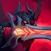
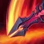
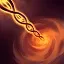
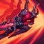
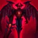

아트록스 (Aatrox)
전사 / 난이도: 중
스킬
-

패시브 죽음의 손아귀아트록스의 기본 공격이 대상 최대 체력에 비례하는 마법 피해를 추가로 입히고 가한 피해량의 100%만큼 체력을 회복합니다. 미니언을 상대로는 회복 효과가 25%로 감소합니다. 이 효과에는 재사용 대기시간이 있습니다. 기본 공격과 스킬이 챔피언이나 대형 정글 몬스터에게 적중하면 이 효과의 재사용 대기시간이 2초 감소합니다. 다르킨의 검 끝이 적중하면 4초 감소합니다.
-

Q 다르킨의 검아트록스가 대검을 내리쳐 물리 피해를 입힙니다. 끝에 적중한 적을 잠깐 롤아이콘-군중제어 에어본공중으로 띄워 올리고 170%의 물리 피해를 입힙니다. 이 스킬은 두 번 재사용할 수 있으며 다시 사용할 때마다 범위 모양이 변하고 이전보다 25% 더 많은 피해를 입힙니다.
-

W 지옥사슬아트록스가 사슬을 발사하여 처음 적중한 적을 1.5초 동안 둔화시키고 물리 피해를 입힙니다. 챔피언과 대형 정글 몬스터는 1.5초 안에 해당 지역을 벗어나지 않으면 중심으로 롤아이콘-군중제어 넉백끌려가 다시 같은 양의 물리 피해를 입습니다.
-

E 그림자 돌진기본 지속 효과: 아트록스가 챔피언을 상대로 모든 피해 흡혈을 얻습니다. 사용 시: 아트록스가 돌진합니다. 이 스킬은 다른 스킬이 진행되는 동안 사용할 수 있습니다.
-

R 세계의 종결자아트록스가 진정한 악마의 모습을 드러내 근처 미니언이 3초 동안 롤아이콘-군중제어 공포공포에 떨게 하고 이동 속도가 증가했다가 10초에 걸쳐 원래대로 돌아옵니다. 지속 시간 동안 공격력, 체력 회복 효과가 증가합니다. 챔피언 처치 관여 시 이 효과의 지속 시간이 5초 늘어나고 이동 속도 효과가 초기화됩니다.
배경 스토리 요약
한때 신성한 전쟁의 신이었던 아트록스는 다르킨의 힘에 의해 타락했다. 이제 그는 끝없는 복수와 자신의 진정한 육체를 되찾기 위해 세계를 피로 물들인다. 그의 검은 모든 것을 파괴하며, 죽음조차 두려워하지 않는 존재가 되었다.